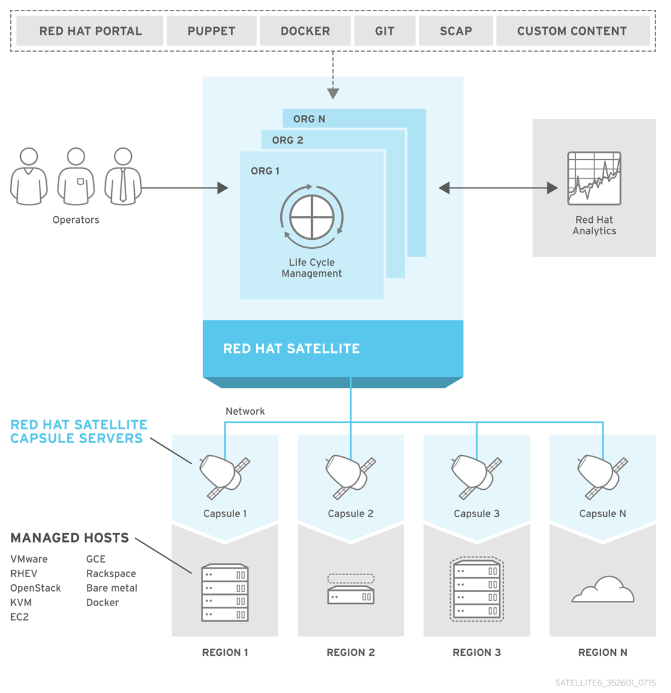

Pre-requisitos de instalación
Descripción de la plataforma
Red Hat Satellite es una solución de administración de sistemas que permite implementar, configurar y mantener sus sistemas en entornos físicos, virtuales y en la nube. Satellite proporciona aprovisionamiento, administración remota y monitoreo de múltiples implementaciones de Red Hat Enterprise Linux con una única herramienta centralizada. Red Hat Satellite Server sincroniza el contenido del portal de clientes de Red Hat y otras fuentes, y proporciona funcionalidades que incluyen la gestión detallada del ciclo de vida, el control de acceso basado en roles de usuarios y grupos, la gestión de suscripción integrada, así como las interfaces GUI, CLI o API.
Arquitectura del Sistema

Sistema Operativo Base
- Red Hat Enterprise Linux 8 x86_64, en el release más reciente disponible. RHEL 9 aún no es soportado.
- Recursos de hardware mínimos: 4 cores o vCPUs, 20 GB de memoria RAM, 4 GB de partition SWAP y 360GB de disco.
- Credenciales en el portal de clientes de Red Hat con acceso a todas las suscripciones de la cuenta.
- Instalación mínima de sistema operativo, sólo el grupo de paquetes @Core, sin software adicional ni procedimientos de hardening aplicados.
- En caso de requerirse un aseguramiento de la plataforma o del sistema operativo, este deberá realizarse posterior a la instalación y puesta en marcha de la plataforma.
- Resolución directa y reversa de DNS para el nombre FQDN del servidor Satellite, registrado en la infraestructura DNS interna del cliente. Este nombre puede contener únicamente letras minúsculas, números, puntos y guiones (-). El uso del archivo /etc/hosts no es recomendado.
- El nombre DNS tiene que resolver a la IP de servicio, no de administración u otras.
- El servidor de Red Hat Satellite debe tener habilitado IPv6.
- Suscripciones de Red Hat Satellite vigentes.
- Acceso root o equivalente al servidor Red Hat Satellite.
Distribución del Almacenamiento
| Volumen | Tipo | Mínimo Recomendado (GB) |
|---|---|---|
| /boot | Partición (/dev/sda1) | 1 |
| / | XFS | 10 |
| /usr | XFS | 5 |
| /tmp | XFS | 5 |
| /var | XFS | 5 |
| /var/log | XFS | 10 |
| /var/lib/pgsql | XFS | 20 |
| /var/lib/pulp | XFS | 300* |
| swap | XFS | 4 |
NOTA 1: Todas las particiones deben ir sobre LVM, con excepción del boot
NOTA 2 (300'*'): Espacio estimado para un entorno con los repositorios Red Hat Enterprise Linux 7,8 y 9 sincronizados. Preferiblemente use discos SSD para un rendimiento óptimo de la plataforma.
Conectividad requerida por la plataforma2
Desde las máquinas que se utilicen para instalar y/o administrar Satellite, hacia el servidor Satellite, se requieren los siguientes puertos:
Mayor detalle sobre los puertos de red requeridos puede obtenerse en el siguiente enlace: https://access.redhat.com/solutions/1193673 3/6
Puertos Administración y gestión
- 22 TCP (SSH)
- 80 TCP (HTTP)
- 443 TCP (HTTPS)
Puertos desde el servidor Satellite a los clientes:
- 22 TCP (SSH3)
Puertos desde los clientes al servidor Satellite:
- 80 TCP (HTTP)
- 443 TCP (HTTPS)
- 5000 TCP (Docker Registry - Opcional)
- 5646 TCP
- 5647 TCP (Katello)
- 8000 TCP
- 8140 TCP (Puppet)
- 9090 TCP
Puertos habilitados en el servidor Satellite:
- 25 / 587 (SMTP/SMTPS) al servidor de correo electrónico (para notificaciones)
- 53 UDP (DNS) al servidor DNS interno
- 123 UDP (NTP) al servidor NTP interno
- 389 TCP (HTTP) LDAP
Datos de servidor de mensajería
- Usuario y password de conexión
- IP de servidor de relay
Datos de configuración de usuarios externos LDAP
- Usuario y password de conexión
- IP y FQDN del servicor controlador de dominio
- Grupos y su pertenecia a las Unidades organizativas (OU) que se tendrán acceso
Acceso URL's de Internet en el servidor Satellite
- subscription.rhn.redhat.com:443 [https]
- subscription.rhsm.redhat.com:443 [https]
- cdn.redhat.com:443 [https]
- cert-api.access.redhat.com:443 [https] - Requerido para Insights
- api.access.redhat.com:443 [https] - Requerido para Insights
- .akamaiedge.net:443 [https] (Todo subdominio de akamaiedge.net*)
- .akamaitechnologies.com:443 [https] (Todo subdominio de akamaitechnologies.com*)
Esta comunicación del servidor Satellite hacia Internet puede ser directa o a través de proxy.
Requisitos de Proxy
- Dirección IP
- FQDN
- Usuario y contraseña para navegación (si aplica)
El proxy no puede realizar suplantación de los certificados digitales de la página de Red Hat. Esto es debido a que Satellite autentica mediante certificados digitales con el portal web de Red Hat.
Firewall
El Firewall debe quedar habilitado y validado los permisos de cada puerto habilitado
Ejecución de Comandos Remotos
Es requerido contar con un usuario regular que tenga acceso mediante SSH a cada uno de los servidores/clientes que serán gestionados por Red Hat Satellite. Satellite utilizará este usuario para gestionar el software y las demás tareas propias de la plataforma. Se recomienda que este usuario se nombre como “satellite” para fácil identificación.
El usuario debe tener privilegios de root mediante sudo en cada servidor sin requerir contraseña. Esto se puede lograr creando el archivo /etc/sudoers.d/satellite.conf con el siguiente contenido:
satellite ALL=(ALL) NOPASSWD: ALL
NOTA: Se solicita el puerto 22, que es el puerto SSH por defecto, pero si el servicio de SSH de los servidores se ejecuta en un puerto diferente, este puerto es el que se requerirá.
Para mayor información sobre accesos requeridos desde Red Hat Satellite hacia Internet, consultar el enlace: https://access.redhat.com/solutions/65300
Dado que Satellite accede usando un par de llaves SSH, por razones de seguridad se recomienda deshabilitar el acceso por contraseña de dicho usuario al finalizar la integración del cliente en Satellite, ejecutando el siguiente comando en el cliente:
# passwd -l satellite
Máquinas de Prueba
Con el fin de verificar el óptimo funcionamiento de la plataforma, se recomienda entregar máquinas de prueba preferiblemente virtuales, con una instalación por defecto de cada uno de los sistemas operativos y correspondientes arquitecturas que se vayan a administrar mediante Satellite (Ej.: una VM RHEL8 y otra RHEL9).
Dichas máquinas deben ser destinadas única y exclusivamente para las pruebas de Red Hat Satellite, de modo que no genere fallas o pérdidas de información en el caso del daño de las mismas.
Instalación de Virt-who (si aplica)
El servicio de virt-who es requerido cuando posee suscripciones que permiten ejecutar máquinas virtuales RHEL ilimitadas en un mismo host (Ej.: suscripciones Virtual Datacenter). Puede usar suscripciones host-based en las siguientes plataformas de virtualización:
- Red Hat Virtualization
- Red Hat Enterprise Linux Virtualization (KVM)
- Red Hat OpenStack Platform
- VMware vSphere
- Microsoft Hyper-V
Virt-who puede ser desplegado en el mismo servidor de Red Hat Satellite o en un servidor independiente. Para la mayoría de casos, es usual desplegar el servicio en el mismo servidor Red Hat Satellite, salvo que la arquitectura y/o sizing de la solución recomienden lo contrario.
Virt-who requiere de lo siguiente para poder operar correctamente:
-
Comunicación desde el servidor donde se encuentra desplegado, hacia la API de la plataforma de virtualización:
- Para RHEV / RHV y vCenter hacia el puerto TCP/443.
- Para Hyper-V, puertos 5985 TCP y 5986 TCP de los hipervisores (no SCVMM).
-
Credenciales de acceso a la plataforma de virtualización con privilegios correctos según la pataforma y configuración requerida para el acceso:
- RHEV / RHV: Se requiere un usuario de sólo lectura para acceder la plataforma o en defecto, el admin@internal: https://access.redhat.com/solutions/545013
- VMware: https://access.redhat.com/solutions/495683
- Hyper-V: https://access.redhat.com/solutions/2023883
En caso que la plataforma de virtualización sea Hyper-V, se requiere realizar en cada hipervisor de esta plataforma la configuración especificada en el documento:https://access.redhat.com/solutions/2023883
Portal de Clientes de Red Hat
Para poder instalar la plataforma, se requiere de las credenciales con acceso al portal de clientes de Red Hat: https://access.redhat.com/. Dichas credenciales requieren lo siguiente:
- Suscripción vigente de Red Hat Satellite.
- La cuenta debe tener los permisos suficientes para: - Gestionar casos de soporte. - Descargar software y actualizaciones. ○ Ver y asociar suscripciones. - Registrar nuevos sistemas al portal.
Para mayor información sobre los requerimientos anteriores, referirse al enlace: https://access.redhat.com/documentation/en-us/red_hat_satellite/6.14/html/installing_satellite_ser ver_in_a_connected_network_environment/preparing_your_environment_for_installation_satellite